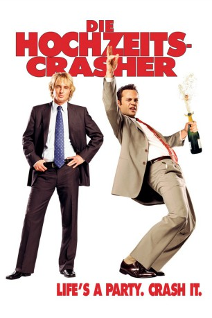
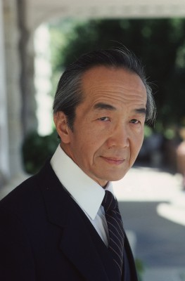

#2447 Die Hochzeits-Crasher
Alternativ: Wedding Crashers
 
 IMDB-Wertung: 7.0 / 10
IMDB-Wertung: 7.0 / 10  Metascore: 64
Metascore: 64 
Die Scheidungsanwälte John Beckwith (Owen Wilson) und Jeremy Grey (Vince Vaughn) haben ein seltsames Hobby: Sie kreuzen als uneingeladene Gäste bei Hochzeitsfeiern auf und schleppen dort Single-Frauen ab, um sie später ins Bett zu bekommen. Dies funktioniert äußerst erfolgreich und so landen die beiden Schwerenöter schließlich sogar auf der Verehelichung einer der Töchter des US-Finanzministers William Cleary (Christopher Walken). Dort bezirzen sie Claire (Rachel McAdams) und Gloria (Isla Fisher), welche sich beide ebenfalls als Töchter Clearys entpuppen. Nachdem Jeremy mit Gloria am Strand seinen Spaß hatte und auch John Claire immer näher kommt, werden die Schürzenjäger sogar zur Privatfeier eingeladen, auf der ihr Täuschungsmanöver jedoch durch Claires Verlobten auffliegt. Monate später haben John und Jeremy ihre Bekanntschaften immer noch nicht vergessen und versuchen ihr Leben in solide Bahnen zu lenken.
Jahr: 2005
Dauer: 119 Minuten
FSK: 12
Land: USA Studio: New Line CinemaTonspuren: DD5.1 - ,
Untertitel: Deutsch,
Auflösung: 1080p (1920x816) Größe: 8478 MB
Genre: Komödie, Liebe
Regisseur: David Dobkin
Drehbuch: Steve Faber, Bob Fisher
Soundtrack: Rolfe Kent
Darsteller:
 Owen Wilson als John Beckwith
Owen Wilson als John Beckwith Vince Vaughn als Jeremy Grey
Vince Vaughn als Jeremy Grey Christopher Walken als Secretary Cleary
Christopher Walken als Secretary Cleary Rachel McAdams als Claire Cleary
Rachel McAdams als Claire Cleary Isla Fisher als Gloria Cleary
Isla Fisher als Gloria Cleary Jane Seymour als Kathleen Cleary
Jane Seymour als Kathleen Cleary Ellen Albertini Dow als Grandma Mary Cleary
Ellen Albertini Dow als Grandma Mary Cleary Keir O'Donnell als Todd Cleary
Keir O'Donnell als Todd Cleary Bradley Cooper als Sack Lodge
Bradley Cooper als Sack Lodge Ron Canada als Randolph
Ron Canada als Randolph Henry Gibson als Father O'Neil
Henry Gibson als Father O'Neil Dwight Yoakam als Mr. Kroeger
Dwight Yoakam als Mr. Kroeger Rebecca De Mornay als Mrs. Kroeger
Rebecca De Mornay als Mrs. Kroeger- David Conrad als Trap
- Jennifer Alden als Christina Cleary
 Geoff Stults als Craig
Geoff Stults als Craig- Jesse Henecke als Attorney
 Lou Cutell als Old Jewish Man
Lou Cutell als Old Jewish Man-  Chao Li Chi als Old Chinese Man
- Ivana Bozilovic als Ivana
- Camille Anderson als Camille
 Rachel Sterling als Brunette
Rachel Sterling als Brunette- Diora Baird als Vivian
- Ned Schmidtke als Frank Meyers
- Jennifer Massey als Woman
 Larry Joe Campbell als Best Man
Larry Joe Campbell als Best Man Irene Roseen als Elderly Woman
Irene Roseen als Elderly Woman- Carson Elrod als Flip
- John G. Pavelec als Ken
 Kathryn Joosten als Chazz's Mom
Kathryn Joosten als Chazz's Mom- Tanaya Nicole als Woman at Jewish Reception
- Naureen Zaim als Hindu Woman
- Cindy Taylor als Girl at Irish Wedding
- Melanie Hawkins als Girl Who Cries
 Summer Altice als Girl Who Cries
Summer Altice als Girl Who Cries Al Cerullo als Helicopter Pilot
Al Cerullo als Helicopter Pilot- Mark Atkinson als Wedding Guest , uncredited
- Shawn Barber als Tablecloth Trick Victim , uncredited
- Claudia Barroso als Wedding Guest , uncredited
- Mike Bellesfield als Crying Man at Funeral , uncredited
- Jed Bernard als Italian Wedding Swing Dancer , uncredited
 James Carville als James Carville , uncredited
James Carville als James Carville , uncredited- Kelly De Sarla als Jewish Wedding Guest , uncredited
- Jewel Donohue als Irish Maid of Honor , uncredited
 Will Ferrell als Chazz Reinhold , uncredited
Will Ferrell als Chazz Reinhold , uncredited- Adrian Finkelstein als Dr. Finkelstein , uncredited
 Pamela Fischer als Restaurant Patron , uncredited
Pamela Fischer als Restaurant Patron , uncredited- Gill Garci als Girl's Father , uncredited
- Tony Giammattei als Old Man at Italian Wedding , uncredited
- Jason Aaron Goldberg als Jewish Groomsman , uncredited
Datei: X:\2005(G-M)\Hochzeits-Crasher, Die (2005, FSK12, 1920x816).mkv seit 11.11.2015
Festplatte: HD 2005(G-Z)-2006(A-Z)
 Es gibt insgesamt 46 Filme in der Gruppe '2005(G-M)'
Es gibt insgesamt 46 Filme in der Gruppe '2005(G-M)'